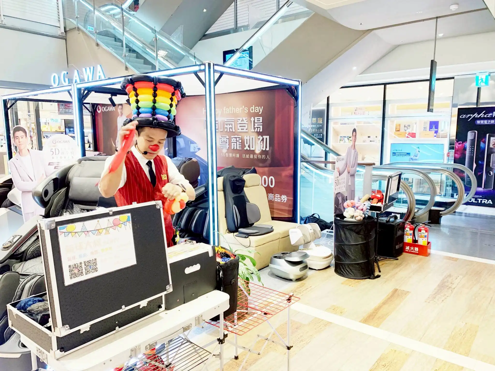
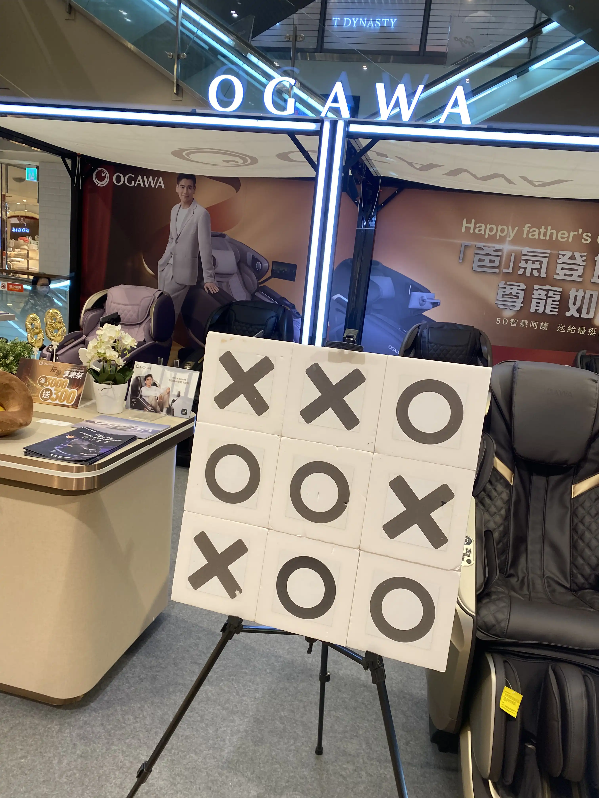
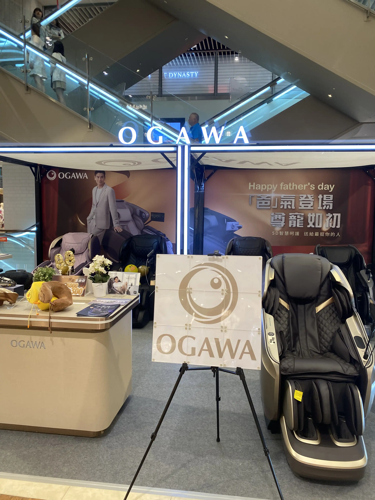
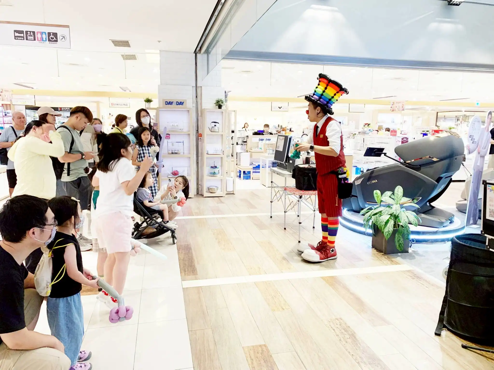

OGAWA 品牌引流活動｜氣球大叔 × SOGO 新竹店展場回顧
氣球魔術秀 × 九宮格品牌遊戲 × 定點手折互動｜讓品牌在歡笑中被深刻記住
📍 活動地點：新竹市｜SOGO 遠東百貨新竹店
氣球魔術現場登場，精準鎖定親子客群
OGAWA 奧佳華按摩椅在 SOGO 新竹店舉辦父親節黃金檔期引流活動。為了讓展場更具親和力並有效吸引百貨人潮，特別邀請 氣球大叔 Sony 帶來招牌氣球魔術秀。表演成功吸引大量家庭客群駐足，不僅創造了熱絡的現場氣氛，更有效提升了潛在客戶在櫃位的停留時間。

創意九宮格遊戲：將品牌 LOGO 轉化為互動驚喜
本次活動最大的特色是 Sony 專為品牌設計的「OOXX 九宮格互動挑戰」。遊戲中邀請現場小朋友自由擺放標記，在最後揭曉時刻，透明面板竟巧妙拼成了完整的 OGAWA LOGO！這項客製化巧思不僅讓現場驚呼連連，更在遊戲過程中深植品牌形象，達到極佳的行銷效果。


高人氣互動：讓每個家庭帶走溫暖回憶
在精彩魔術與遊戲後，Sony 持續進行定點造型氣球互動服務。透過現場手折出各式高質感的卡通角色作品，讓排隊的小賓客與家長都能感受到品牌的高度重視與誠意，圓滿達成父親節檔期的行銷目的。

「品牌活動的溫度，往往源自於一個真誠的笑聲與一顆繽紛的氣球。我們致力於將品牌訊息轉化為家庭的美好記憶。」 — 氣球大叔 Sony
🔥 更多新竹在地與品牌行銷精彩案例：
- 👉 新竹巨城指標：新竹 Big City 勞動部創業展｜市集氣球魔術與定點手折
- 👉 品牌專櫃快閃：新竹巨城 Swatch 聖誕快閃｜品牌引流造型氣球派送
- 👉 精品品牌合作：桃園華泰 Polo 專櫃｜客製氣球藝術與高端品牌互動
- 👉 國際大廠指定：IKEA 台中店 10 週年慶｜馬戲風魔術秀與品牌客製拼圖